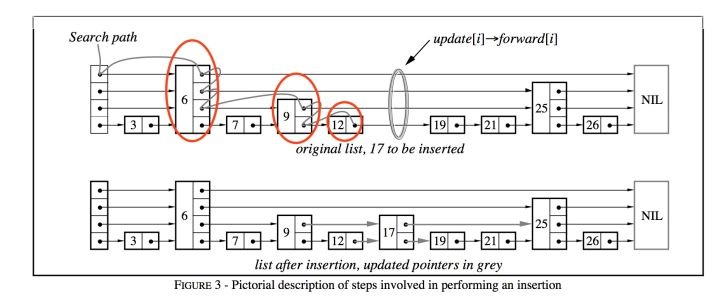

leveldb里的memdb使用跳表来实现的，不同于常见的使用链表来实现的跳表，memdb是使用数组来模拟的
以下代码分析基于go版本的leveldb
https://github.com/syndtr/goleveldb
MemDB的结构
const (
nKV = iota
nKey
nVal
nHeight
nNext
)
const tMaxHeight = 12
// DB is an in-memory key/value database.
type DB struct {
cmp comparer.BasicComparer
rnd *rand.Rand
mu sync.RWMutex
kvData []byte
// Node data:
// [0] : KV offset
// [1] : Key length
// [2] : Value length
// [3] : Height
// [3..height] : Next nodes
nodeData []int
prevNode [tMaxHeight]int
maxHeight int
n int
kvSize int
}
// New creates a new initialized in-memory key/value DB. The capacity
// is the initial key/value buffer capacity. The capacity is advisory,
// not enforced.
//
// This DB is append-only, deleting an entry would remove entry node but not
// reclaim KV buffer.
//
// The returned DB instance is safe for concurrent use.
func New(cmp comparer.BasicComparer, capacity int) *DB {
p := &DB{
cmp: cmp,
rnd: rand.New(rand.NewSource(0xdeadbeef)),
maxHeight: 1,
kvData: make([]byte, 0, capacity),
nodeData: make([]int, 4+tMaxHeight),
}
p.nodeData[nHeight] = tMaxHeight
return p
}
三个重要的结构分别是kvData，nodeData，prevNode，下面通过Put操作来解释这三者的作用
如何Put一个键值对
先通过一幅图理解一下Put的流程

// 假设现在要插入17
// 从最左边的head节点开始，当前层高是4；
// head节点在第4层的next节点的key是6，由于 17 大于6，所以在当前节点的右边，就沿着当前层的链表走到下一节点，也就是key是6节点。
// 6节点 在第4层的next节点是NIL，也就是后面没有节点了，那么就需要在当前节点往下层走，走到第3层。
// 6节点 在第3层的next节点的key是25，由于 17 小于25，那么就需要在当前节点往下层走，走到第2层。
// 6节点 在第2层的next节点的key是9，由于 17 大于9，那么就沿着当前层的链表走到下一节点，也就是key是9的节点。
// 9节点 在第2层的nex节点的key是25，由于 17 小于25，那么就需要在当前节点往下层走，走到第1层。
// 9节点 在第1层的next节点的key是12，由于 17 大于12，那么就沿着当前层的链表走到下一节点，也就是key是12的节点。
// 12节点 在第1层的next节点的key是19，由于 17 小于19，本来应该要继续走到下一层，但是由于当前已经是最后一层了，所以直接返回12的next节点，也就是19节点
此时我们再回过头看代码实现，看看kvData，nodeData，prevNode都存着什么东西
func (p *DB) Put(key []byte, value []byte) error {
// 访问需加锁
p.mu.Lock()
defer p.mu.Unlock()
// 这里即是找到节点19的过程，这里返回的node是个偏移量，exact在找到一样key的node时会返回true
if node, exact := p.findGE(key, true); exact {
// 偏移量为原先数组的长度
kvOffset := len(p.kvData)
// 将key和value放入kvData
p.kvData = append(p.kvData, key...)
p.kvData = append(p.kvData, value...)
// 更新node的偏移量
p.nodeData[node] = kvOffset
// 更新node的value长度
m := p.nodeData[node+nVal]
p.nodeData[node+nVal] = len(value)
// 更新kvsize的大小
p.kvSize += len(value) - m
return nil
}
// 如果没有找到相同key的node，那么就需要插入一个新node
// 随机一个高度h，新node要加入第1层到第h层
h := p.randHeight()
if h > p.maxHeight {
// 如果随机到的高度比当前的最大高度大，将[maxHeight, h]范围内的prevNode置为0？
for i := p.maxHeight; i < h; i++ {
p.prevNode[i] = 0
}
// 更新最大高度
p.maxHeight = h
}
kvOffset := len(p.kvData)
// 更新kvdata
p.kvData = append(p.kvData, key...)
p.kvData = append(p.kvData, value...)
// Node
node := len(p.nodeData)
// nodeData中依次放入偏移量，key的长度，value的长度和高度
p.nodeData = append(p.nodeData, kvOffset, len(key), len(value), h)
// prevNode[i]表示 新加入的node在第i层的前驱节点，这些前驱节点会在findGE时被加入到prevNode中
for i, n := range p.prevNode[:h] {
// m位置是前驱节点记录后继节点偏移的下标
m := n + nNext + i
// 所以p.nodeData[m]是原先前驱节点的后继节点，这里就成为了新加入节点的后继节点了，可以想象一下在A->C中插入B，B的后继为C，A的后继改为B
p.nodeData = append(p.nodeData, p.nodeData[m])
// 更新前驱节点的后继节点为当前节点
p.nodeData[m] = node
}
p.kvSize += len(key) + len(value)
p.n++
return nil
}
由上可知
- nodeData里的node结构主要包含偏移量，key长度，value长度，高度, 以及后继节点位置的集合(如果一个节点在第4层，那么它在每一层都有一个后继节点)
- kvData先存入key的内容，再存入value的内容
- prevNode存放的是临时节点，每次查找新节点的插入位置时，保存每一层的前驱节点，然后在插入新节点时，将这些前驱节点和新加入的节点相关联
每次插入节点时随机一个高度
func (p *DB) randHeight() (h int) {
const branching = 4
h = 1
for h < tMaxHeight && p.rnd.Int()%branching == 0 {
h++
}
return
}
如何查找某个Key的插入位置
再看看如何查找一个key的插入位置
// Must hold RW-lock if prev == true, as it use shared prevNode slice.
func (p *DB) findGE(key []byte, prev bool) (int, bool) {
node := 0
// 从跳表顶部自顶向下开始找
h := p.maxHeight - 1
for {
// nNext等于4，这里每次从最大高度的偏移量开始找
next := p.nodeData[node+nNext+h]
cmp := 1
if next != 0 {
o := p.nodeData[next]
// 找到一个节点的key和当前的key进行比较
cmp = p.cmp.Compare(p.kvData[o:o+p.nodeData[next+nKey]], key)
}
// 如果当前的node的key小于要插入的key，则继续往后找
if cmp < 0 {
// Keep searching in this list
node = next
} else {
// 对于插入或删除而进行的搜索，即使遇到相同的也要继续往下一层比较
if prev {
// 将找到的节点放置到prevNode的高度中
p.prevNode[h] = node
} else if cmp == 0 {
// 如果找到一样的key，返回这个node
return next, true
}
// 如果已经在最底层了
if h == 0 {
return next, cmp == 0
}
// 往下一层找
h--
}
}
}
- 找到一个node，node的key大于等于当前要插入的key
- 从最高层往下找，一层一层搜索，比较大小的方法通过comparer接口实现
如何查找一个key的前驱节点
func (p *DB) findLT(key []byte) int {
node := 0
h := p.maxHeight - 1
for {
next := p.nodeData[node+nNext+h]
o := p.nodeData[next]
if next == 0 || p.cmp.Compare(p.kvData[o:o+p.nodeData[next+nKey]], key) >= 0 {
if h == 0 {
break
}
h--
} else {
node = next
}
}
return node
}
如何查找最后一个节点
func (p *DB) findLast() int {
node := 0
h := p.maxHeight - 1
for {
next := p.nodeData[node+nNext+h]
if next == 0 {
if h == 0 {
break
}
h--
} else {
node = next
}
}
return node
}
如何删除一个节点
// Delete deletes the value for the given key. It returns ErrNotFound if
// the DB does not contain the key.
//
// It is safe to modify the contents of the arguments after Delete returns.
func (p *DB) Delete(key []byte) error {
p.mu.Lock()
defer p.mu.Unlock()
node, exact := p.findGE(key, true)
if !exact {
return ErrNotFound
}
h := p.nodeData[node+nHeight]
for i, n := range p.prevNode[:h] {
m := n + nNext + i
p.nodeData[m] = p.nodeData[p.nodeData[m]+nNext+i]
}
p.kvSize -= p.nodeData[node+nKey] + p.nodeData[node+nVal]
p.n--
return nil
}
- 删除操作和插入操作相反，需要更新要删除节点后面的节点
- 更新被删除节点的前驱节点的后继节点位置
- 可以看出，被删除的节点其实仍然在kvData和nodeData里面，只是不再有前继续节点指向它们
其余功能
// Contains returns true if the given key are in the DB.
//
// It is safe to modify the contents of the arguments after Contains returns.
func (p *DB) Contains(key []byte) bool {
p.mu.RLock()
_, exact := p.findGE(key, false)
p.mu.RUnlock()
return exact
}
// Get gets the value for the given key. It returns error.ErrNotFound if the
// DB does not contain the key.
//
// The caller should not modify the contents of the returned slice, but
// it is safe to modify the contents of the argument after Get returns.
func (p *DB) Get(key []byte) (value []byte, err error) {
p.mu.RLock()
if node, exact := p.findGE(key, false); exact {
o := p.nodeData[node] + p.nodeData[node+nKey]
value = p.kvData[o : o+p.nodeData[node+nVal]]
} else {
err = ErrNotFound
}
p.mu.RUnlock()
return
}
// Find finds key/value pair whose key is greater than or equal to the
// given key. It returns ErrNotFound if the table doesn't contain
// such pair.
//
// The caller should not modify the contents of the returned slice, but
// it is safe to modify the contents of the argument after Find returns.
func (p *DB) Find(key []byte) (rkey, value []byte, err error) {
p.mu.RLock()
if node, _ := p.findGE(key, false); node != 0 {
n := p.nodeData[node]
m := n + p.nodeData[node+nKey]
rkey = p.kvData[n:m]
value = p.kvData[m : m+p.nodeData[node+nVal]]
} else {
err = ErrNotFound
}
p.mu.RUnlock()
return
}
// NewIterator returns an iterator of the DB.
// The returned iterator is not safe for concurrent use, but it is safe to use
// multiple iterators concurrently, with each in a dedicated goroutine.
// It is also safe to use an iterator concurrently with modifying its
// underlying DB. However, the resultant key/value pairs are not guaranteed
// to be a consistent snapshot of the DB at a particular point in time.
//
// Slice allows slicing the iterator to only contains keys in the given
// range. A nil Range.Start is treated as a key before all keys in the
// DB. And a nil Range.Limit is treated as a key after all keys in
// the DB.
//
// WARNING: Any slice returned by interator (e.g. slice returned by calling
// Iterator.Key() or Iterator.Key() methods), its content should not be modified
// unless noted otherwise.
//
// The iterator must be released after use, by calling Release method.
//
// Also read Iterator documentation of the leveldb/iterator package.
func (p *DB) NewIterator(slice *util.Range) iterator.Iterator {
return &dbIter{p: p, slice: slice}
}
// Capacity returns keys/values buffer capacity.
func (p *DB) Capacity() int {
p.mu.RLock()
defer p.mu.RUnlock()
return cap(p.kvData)
}
// Size returns sum of keys and values length. Note that deleted
// key/value will not be accounted for, but it will still consume
// the buffer, since the buffer is append only.
func (p *DB) Size() int {
p.mu.RLock()
defer p.mu.RUnlock()
return p.kvSize
}
// Free returns keys/values free buffer before need to grow.
func (p *DB) Free() int {
p.mu.RLock()
defer p.mu.RUnlock()
return cap(p.kvData) - len(p.kvData)
}
// Len returns the number of entries in the DB.
func (p *DB) Len() int {
p.mu.RLock()
defer p.mu.RUnlock()
return p.n
}
// Reset resets the DB to initial empty state. Allows reuse the buffer.
func (p *DB) Reset() {
p.mu.Lock()
p.rnd = rand.New(rand.NewSource(0xdeadbeef))
p.maxHeight = 1
p.n = 0
p.kvSize = 0
p.kvData = p.kvData[:0]
p.nodeData = p.nodeData[:nNext+tMaxHeight]
p.nodeData[nKV] = 0
p.nodeData[nKey] = 0
p.nodeData[nVal] = 0
p.nodeData[nHeight] = tMaxHeight
for n := 0; n < tMaxHeight; n++ {
p.nodeData[nNext+n] = 0
p.prevNode[n] = 0
}
p.mu.Unlock()
}